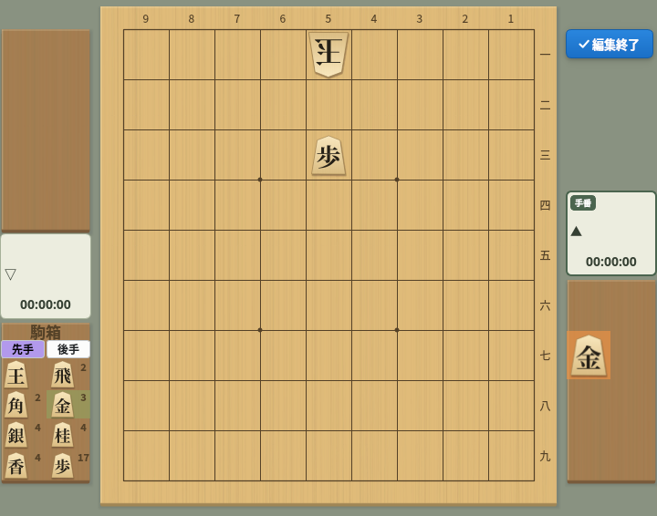
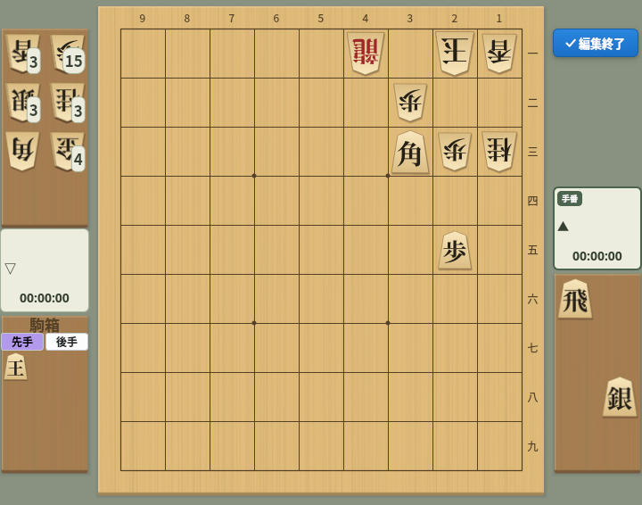
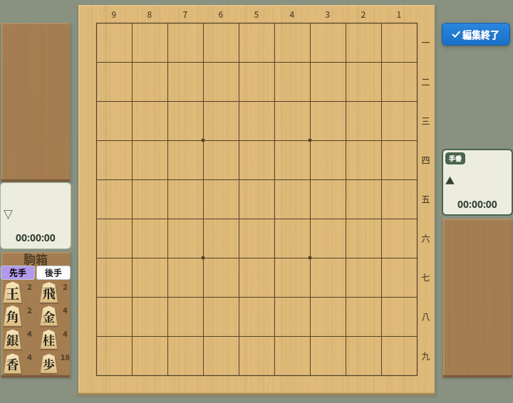
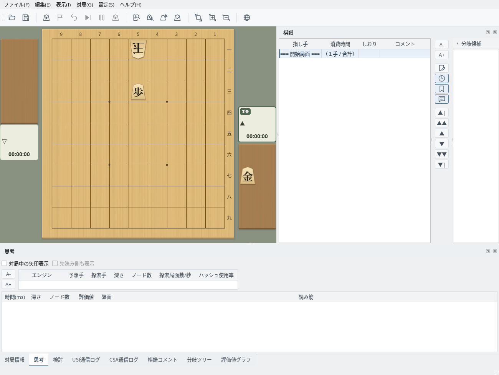

駒を自由に置いて、任意の局面を作る
表示中の局面をもとに、駒を動かしたり置いたりして局面を作ります
「編集」→「局面編集開始」で編集を始めます。表示中の局面がそのまま編集のもとになり、棋譜は「=== 開始局面 ===」の行だけになります（評価値グラフも消えます）。棋譜に未保存の変更があるときは、先に保存するかの確認が表示されます。
編集中は、盤の右上に「✓ 編集終了」ボタン、左下に駒箱が表示されます。
局面編集中：盤の右上に「編集終了」ボタン、左下に駒箱が表示される
マウスで次のように操作します。駒を盤や駒台に置くと、その場所に合った持ち主になります（相手の駒台に置くと相手の持ち駒）。
「全ての駒を駒箱へ」で盤を空にし、駒箱の「後手」を選んで玉を5一に、「先手」に切り替えて歩を5三に置き、金を先手の駒台に置くと、頭金の1手詰の問題ができます。

駒箱から作った局面：後手玉5一・先手歩5三・先手の持ち駒に金
よく使う配置をメニューから呼び出し、手番を切り替えます
「編集」→「平手初期配置」で平手の初期配置に戻します。
「編集」→「詰将棋初期配置」で詰将棋の例題の局面を置きます。残りの駒はすべて玉方（後手）の持ち駒になり、攻め方の玉は駒箱に入る、詰将棋の慣例どおりの配置です。ここから駒を動かして問題を作れます。

詰将棋初期配置：残りの駒は玉方の持ち駒、攻め方の玉は駒箱
「編集」→「全ての駒を駒箱へ」で、盤上と駒台の駒をすべて駒箱に入れます。空の盤から局面を作るときに使います。

全ての駒を駒箱へ：盤と駒台が空になり、駒箱に枚数が表示される
「編集」→「手番変更」で、次に指す側（手番）を先手と後手で切り替えます。対局者の欄の「手番」の印が付いた側が次に指します。
作った局面を開始局面にして、対局や検討に使います
「✓ 編集終了」ボタン（または「編集」→「局面編集終了」）で編集を終えると、作った局面が棋譜の開始局面になり、駒箱は消えます。
この局面から、対局（開始局面に「現在の局面」を選ぶ）、検討、詰み探索などを始められます。対局を始めるには、先手と後手の玉が1枚ずつ盤上に必要です。

編集終了後：作った局面が開始局面になる